Comparison of plot characteristics and digitized deadwood
Author
Janne Mäyrä
Published
December 22, 2022
Code
from drone_detector.utils import*from drone_detector.imports import*import rasterio.mask as rio_maskimport seaborn as snssns.set_style('whitegrid')import warningswarnings.filterwarnings("ignore")sys.path.append('..')from src.tree_functions import*
The following shows how we compared the field-measured data from both study sites and annotations that are located within these plots.
def match_circular_plot(row, plots):"Match annotations with field plots"for p in plots.itertuples():if row.geometry.intersects(p.geometry):returnint(p.id)
Count the number of annotated deadwood instances in each circular field plot, as well as note which of the circular plots are located in the conserved areas.
Plot the numbers. These show that we were able to annotate slighly less deadwood than what was measured in the field. On the other hand, especially in managed forests there were also several cases where there were more fallen deadwood annotations than field measured fallen deadwood. As the resolution of our data makes it impossible to accurately tell whether a fallen trunk had DBH less than 100mm, some of the annotations can be such that were determined too thin in the field. Other likely reason is that canopy obscured the deadwood instances, as the average canopy cover percentage was around 61 % for the field plots.
Overall the conserved forests are a bit more dense, but not that much.
Plot the relationship between annotated deadwood and field-measured deadwood. Each dot is a single field plot.
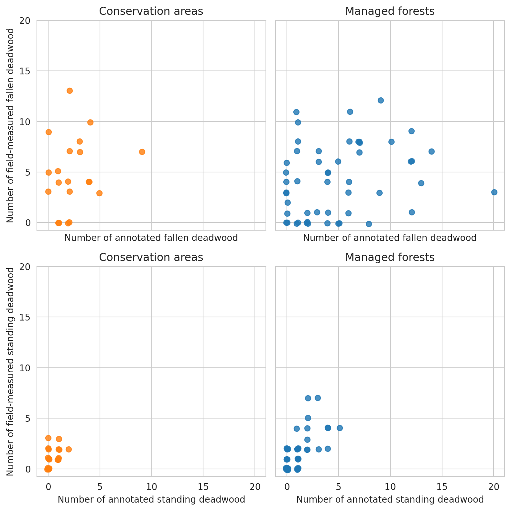
For annotated groundwood, as the annotations can be twisted due to e.g. orthorectification errors, we use the longest side of the smallest rotated rectangle that can be fit around the polygon as a proxy for the trunk length.
Diameter can be approximated with the following approach. For each polygon,
Get minimum rotated rectangle
Draw three lines that are perpendicular to the longer side of the minimum rotated rectangle, starting from the points of 10%, 50% and 90% of the length of the minimum rotated rectangle
Intersect these lines with the polygon. Diameter is the mean lenght of these intersecting lines.
Compare the distributions of the downed trunk lengths. Both graphs only take the parts within the plots into account. Lengths are binned into 1m bins.
As expected, the field measured fallen deadwood were clearly shorter than annotated deadwood. Most of the annotated fallen deadwood were shorter than 2 meters, while field measured trees were typically longer than 5 meters. However, this is most likely due to canopy obscuring the fallen deadwood, and some of the longer trees are annotated as multiple shorter ones. When comparing the difference in total lengths of field-measured trees and annotated trees, typically denser canopy cover meant also larger difference.
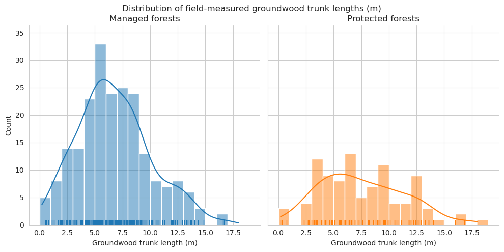
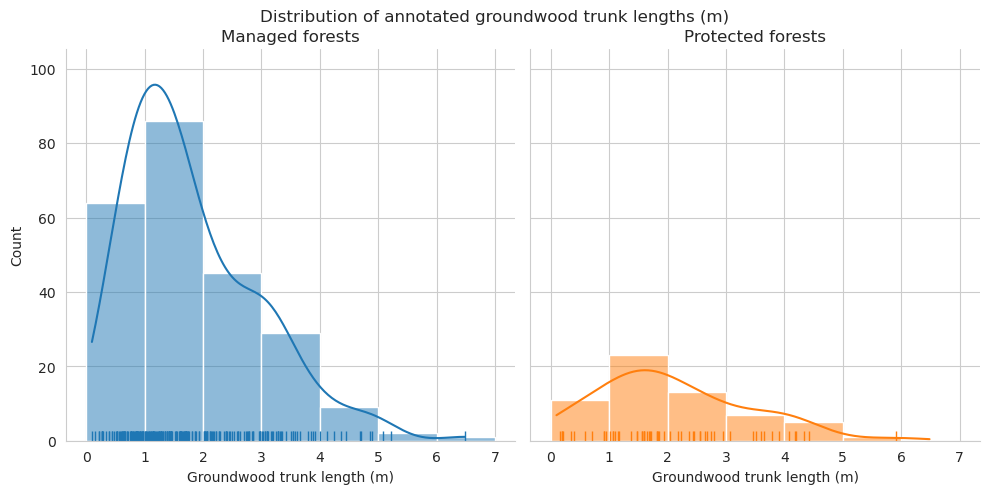
As expected, annotated trunks are clearly on average shorter than field measured.
Compare the measured DBH for downed trees and estimated diameter of annotated downed deadwood. For annotated deadwood, the diameter is estimated for the whole tree, not only for the part within the field plot. DBHs are binned into 50mm bins.
When comparing the DBH distributions for fallen deadwood, the diameter classes 125-150mm, 150-175mm and 175-200mm were clearly overrepresented in the annotated data. As these DBH classes were also the most common among field data, the reason for this could be the same as with length differences, and the visible trees area partially obscured by the canopy.
g = sns.lmplot(data=plot_dw_data, x='n_udw_ann', y='canopy_cover_pct', col='conservation', hue='conservation', ci=1, legend=False)g.axes[0,0].set_title('Managed forests')g.axes[0,1].set_title('Protected forests')g.axes[0,0].set_xticks(range(0,10,2))g.axes[0,1].set_xticks(range(0,10,2))g.set_ylabels('Canopy cover percentage for field plots')g.set_xlabels('Number of annotated standing deadwood')plt.show()
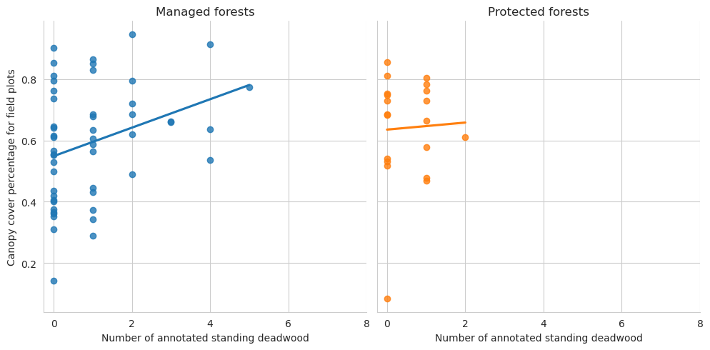
Then fallen deadwood
Code
g = sns.lmplot(data=plot_dw_data, x='n_ddw_plot', y='canopy_cover_pct', col='conservation', hue='conservation', ci=1, legend=False)g.axes[0,0].set_title('Managed forests')g.axes[0,1].set_title('Protected forests')g.axes[0,0].set_xticks(range(0,21,2))g.axes[0,1].set_xticks(range(0,21,2))g.set_ylabels('Canopy cover percentage for field plots')g.set_xlabels('Number of field-measured fallen deadwood within plots')plt.show()
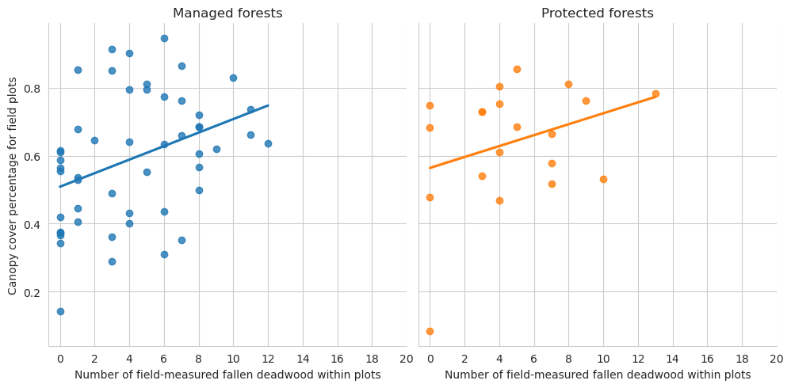
Code
g = sns.lmplot(data=plot_dw_data, x='n_ddw_ann', y='canopy_cover_pct', col='conservation', hue='conservation', legend=False, ci=1)g.axes[0,0].set_title('Managed forests')g.axes[0,1].set_title('Protected forests')g.axes[0,0].set_xticks(range(0,21,2))g.axes[0,1].set_xticks(range(0,21,2))g.set_ylabels('Total lengths (m) of field-measured groundwood within plots')g.set_xlabels('Total lengths (m) of annotated groundwood within plots')plt.show()
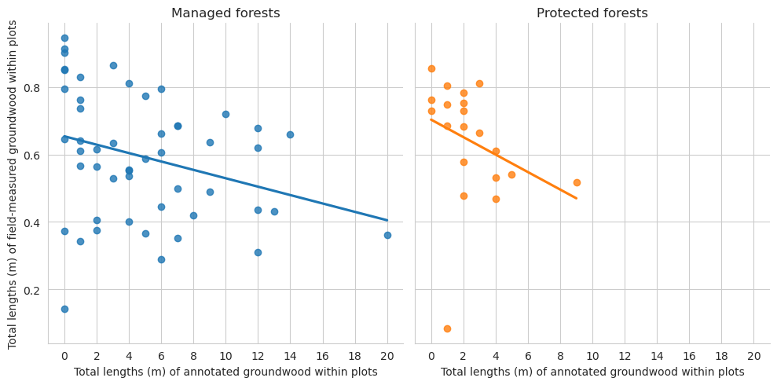
Plot the total lengths of groundwood located within a single field plot.
For Evo dataset, we were able to annotate twice as much groundwood as there are in total in the field data, and only a quarter of the number of standing deadwood. Because Evo dataset is missing the field-measured information for deadwood height, we were not able to check whether the missing standing deadwood were, for instance, only a couple of meters tall and thus hidden below the canopy. Compared to Hiidenportti, the forest canopy in Evo was significantly thicker, as the average canopy cover percentage in the field plots was around 82%.
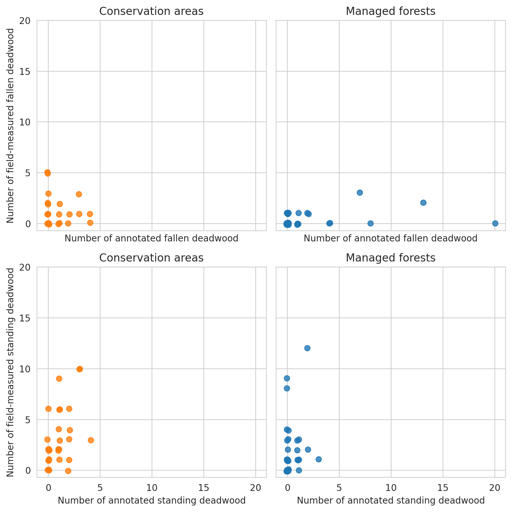
Plot the plot-wise differences between field-measurements and annotations.
Code
g = sns.lmplot(data=evo_plots, x='n_udw_plot', y='canopy_cover_pct', col='conservation', hue='conservation', ci=0)g.set_ylabels('Canopy cover percentage in circular plot')g.set_xlabels('Field-measured standing deadwood')plt.show()
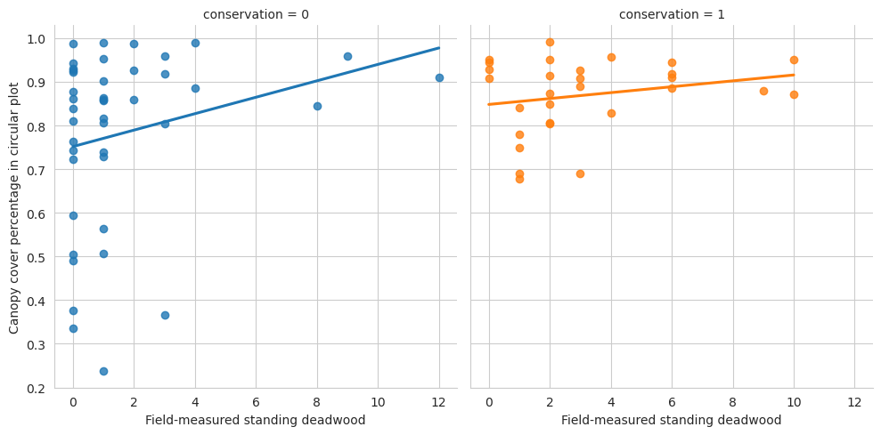
Code
g = sns.lmplot(data=evo_plots, x='n_udw_ann', y='canopy_cover_pct', col='conservation', hue='conservation', ci=0)g.set_ylabels('Canopy cover percentage in circular plot')g.set_xlabels('Number of annotated standing deadwood')plt.show()
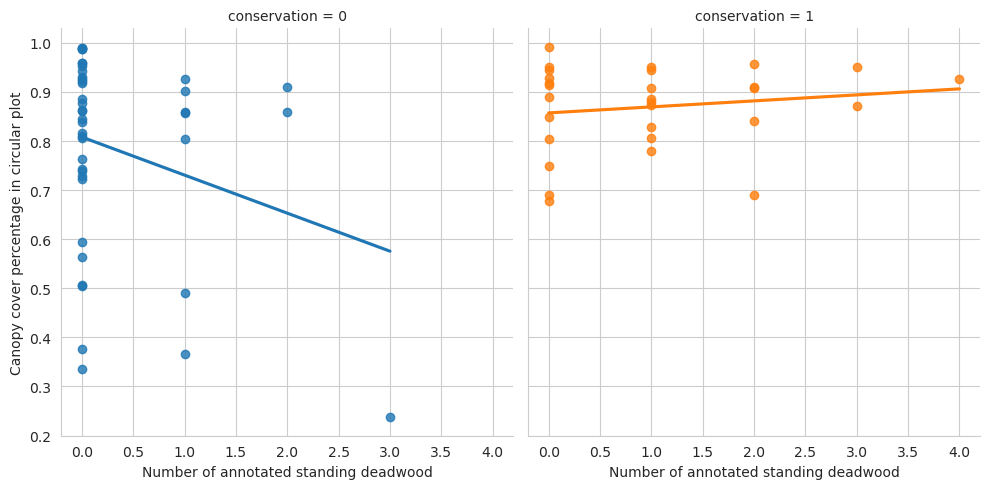
Code
g = sns.lmplot(data=evo_plots, x='n_ddw_plot', y='canopy_cover_pct', col='conservation', hue='conservation', ci=0)g.set_ylabels('Canopy cover percentage in circular plot')g.set_xlabels('Number of field-measured fallen deadwood')plt.show()
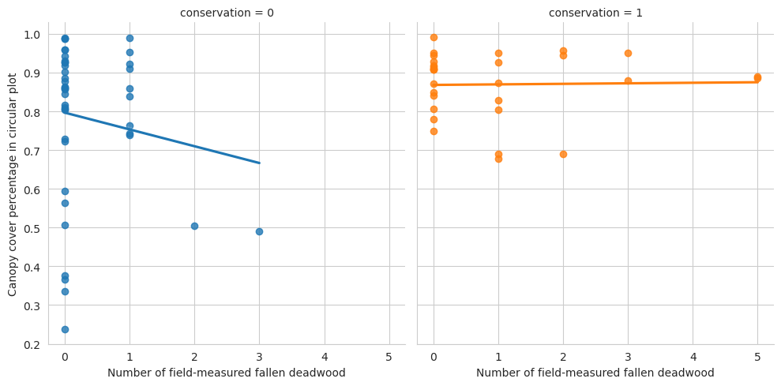
Code
g = sns.lmplot(data=evo_plots, x='n_ddw_ann', y='canopy_cover_pct', col='conservation', hue='conservation', ci=0)g.set_ylabels('Canopy cover percentage in circular plot')g.set_xlabels('Number of annotated fallen deadwood')plt.show()
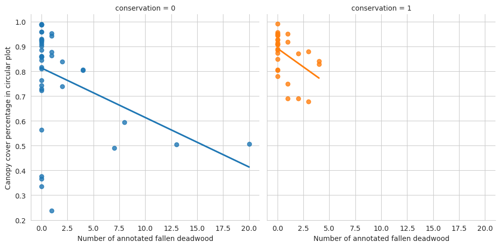
Again, denser canopy indicates less annotated fallen data.
Again, denser canopy indicates less annotated groundwood, and here also deadwood in general. However, Evo has such a low number of fallen deadwood that evaluating that is difficult.
As Evo data doesn’t have field-measured deadwood lengths, we can’t plot that relationship. We can, however, plot the DBH distributions, even though Evo dataset only has 43 downed deadwood with dbh measured.